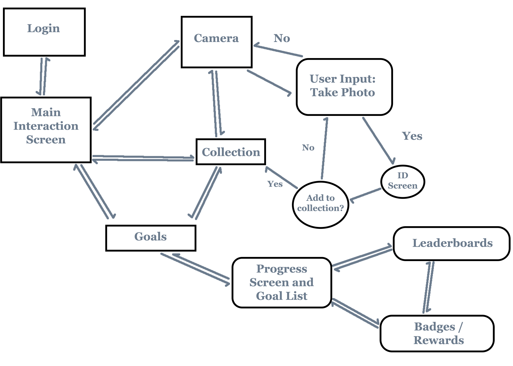

Wireframes
User Task - Tracking Progress / Targets and Goals
The user will be able to check how many regional plants they are
able to identify using the camera on their phone. There can be a reward for marking the
location of invasive plants, and a goal to identify a certain amount of plants within a certain time.
Upon reaching this goal, the player is awarded a badge and placed on a leaderboard. Enough badges
grants the player further rewards.
User Flow

Wireframes
'insert description here
'insert image here'